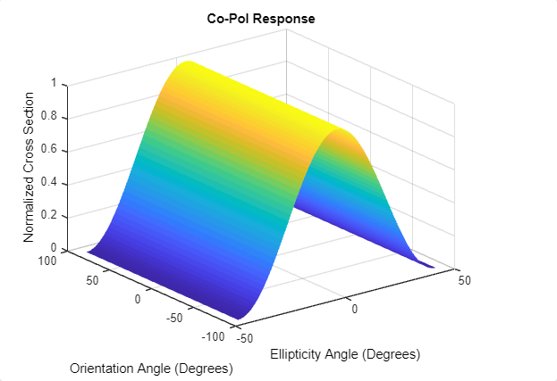
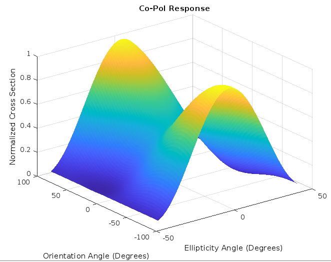
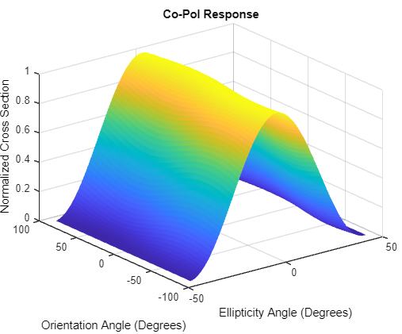
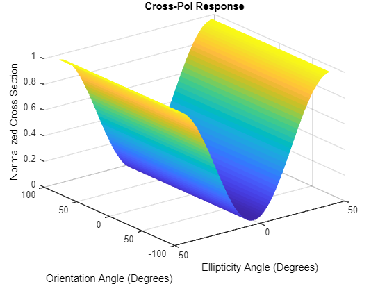
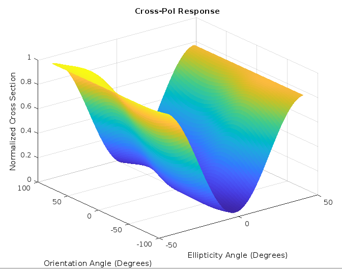
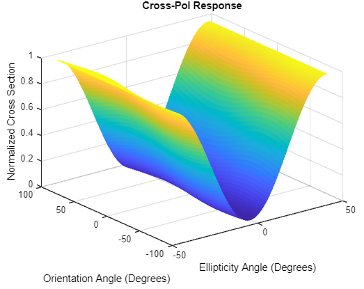

PolSAR Cal
Subham Raj · IIT Kanpur
19 / 26
→
next
←
back
M
menu
F
fullscreen
06 · Results
Signatures snap back to theory
Theoretical trihedral
Before calibration
After calibration
Co-pol
P = cos²2χ



Cross-pol
P = sin²2χ



Jump to slide
Esc to close